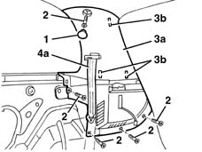

7040H43 REAR PILLAR TRIM (one), left or right on versions with BOSE system - R.R.
- Path
- Procedures > 70 FITTINGS > 7040 BODYSHELL INTERIOR TRIMS AND FITTINGS > 7040H roof panel lining > 7040H43 REAR PILLAR TRIM (one), left or right on versions with BOSE system - R.R.
- Kind
- repair procedure (removal / refitting; the operation number is the code)
- Applies to
- all engines; all production periods
- Interactive page
- https://sloeber94.github.io/elrnDB-lYpsln/en/#/2429596
Applies to: all engines; all production periods
 Removing
Removing
 Refitting
Refitting7040B10 load platform (luggage platform) trim - r+r
5580T40 bose sound system subwoofer r r
7040L40 front compartment scuff strip - r r
7050A20 one-piece rear seat cushion - r r
1. Release the cap.
2. Undo the bolts.
3. Move the trim (3a) slightly releasing the inner retainers (3b).
4. Keep the trim (4a) releasing it from the seat belt (4b).

Applies to: all engines; all production periods
Refitting
RemovingCheck that the trim is not damaged and that the retainers are intact.
Position the trim after having fitted the seat belt and fit the inner retainers.
Tighten the bolts.
Fit the plug.
7050A20 one-piece rear seat cushion - r r
7040L40 front compartment scuff strip - r r